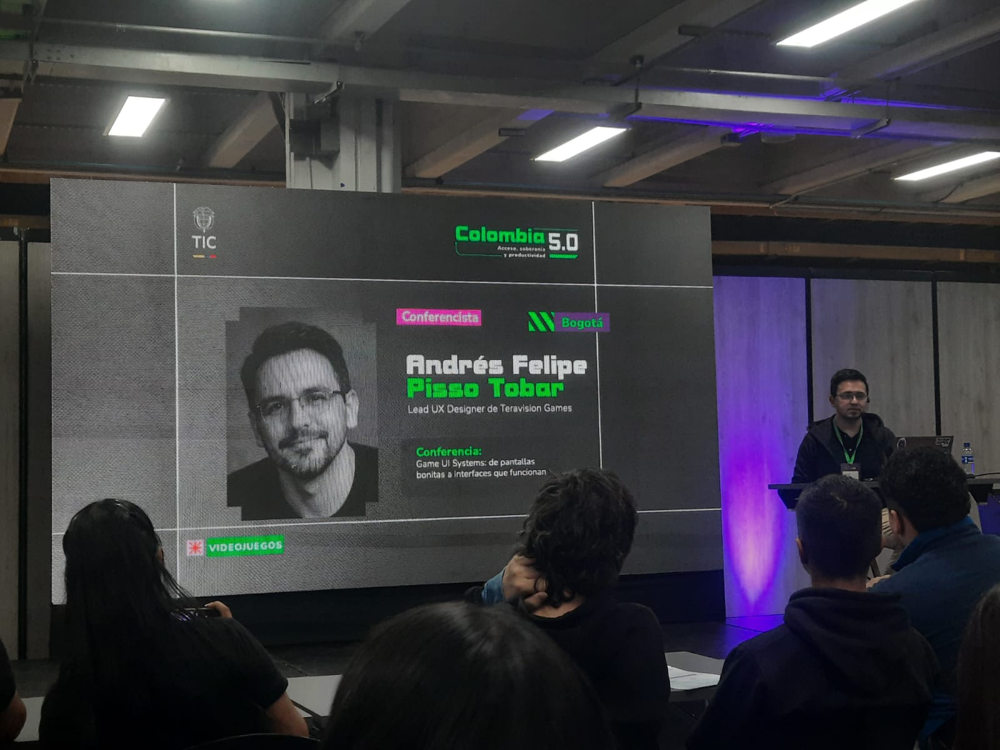
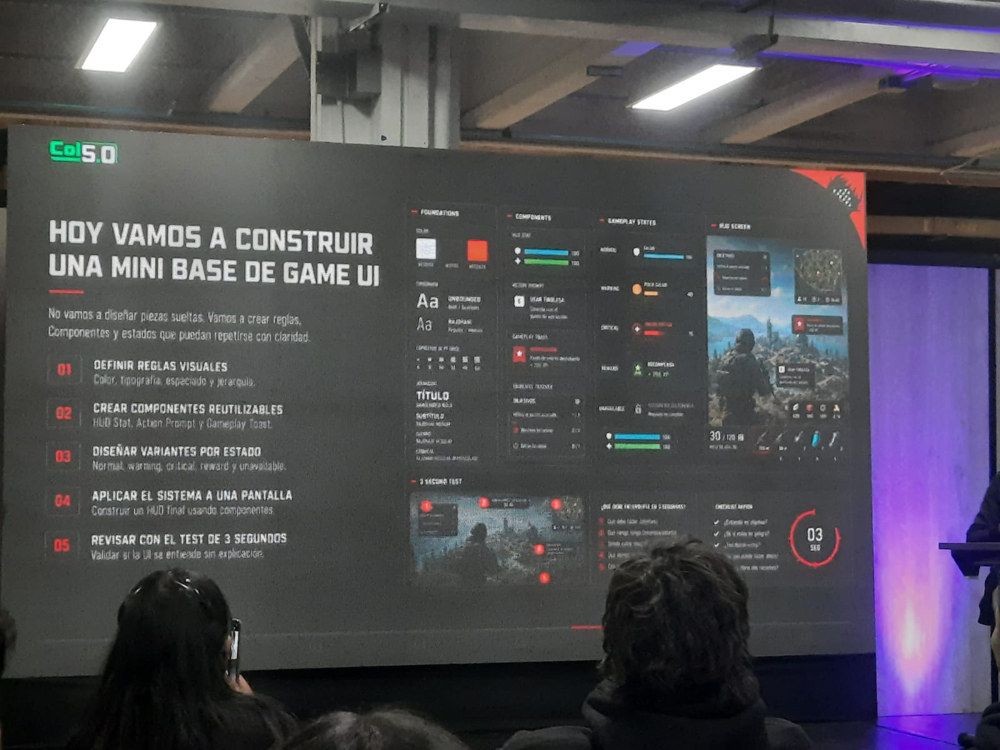
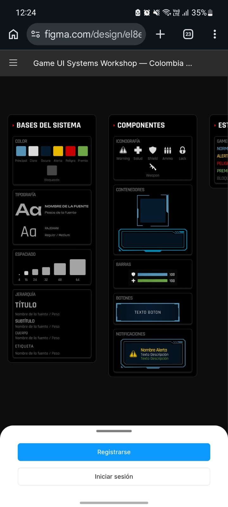

Summary
This was one of the most practical talks of the whole event. Andres Pisso Tobar, who works as Lead UX Designer at Teravision Games, gave a hands-on workshop about how to design UI systems for video games. The main idea he was trying to explain is that making a good game interface is not just about making it look nice — it's about building a system with clear rules, reusable components and different states that can be used consistently across the whole game.
He started with something that really caught my attention: "A UI can look good and still not work." He explained that the problem is not always having too much stuff on screen. A lot of times the real problem is that nobody defined the rules for what should appear, when it should appear and how it should behave. When there is no system, every new screen has to be built from scratch and that creates a lot of inconsistency and extra work for the team.
During the workshop we built a mini Game UI base in Figma by following 5 steps:
- 01 Define visual rules — colors, fonts, spacing and text hierarchy.
- 02 Create reusable components — HUD Stats, Action Prompts and Gameplay Toasts.
- 03 Design state variants — Normal, Warning, Critical, Reward and Unavailable.
- 04 Apply the system to a full screen — build a complete HUD using the components.
- 05 Test with the 3-Second Test — check if the UI makes sense without any explanation.
At the end he made a point that I think applies to all areas of development, not just games: the difference between someone who just makes pretty screens and someone who builds real systems is the discipline to create clear rules first. In a real game studio, having a good design system means you can iterate fast instead of getting stuck fixing the same inconsistency problems over and over.
Photos from the Workshop — Colombia 5.0

Andres Felipe Pisso Tobar — Lead UX Designer, Teravision Games Title slide: Game UI Systems — From Pretty Screens to Interfaces That Work
Title slide: Game UI Systems — From Pretty Screens to Interfaces That Work
 "A UI can look good and still not work" — key slide of the talk
"A UI can look good and still not work" — key slide of the talk
 A Game UI system has to serve both the player and the development team
A Game UI system has to serve both the player and the development team
 Building the mini Game UI base — the 5 methodological steps
Building the mini Game UI base — the 5 methodological steps

System foundations: color palette, typography, spacing scale and hierarchy
The Figma file we worked on: colors, Rajdhani font, components and notification states